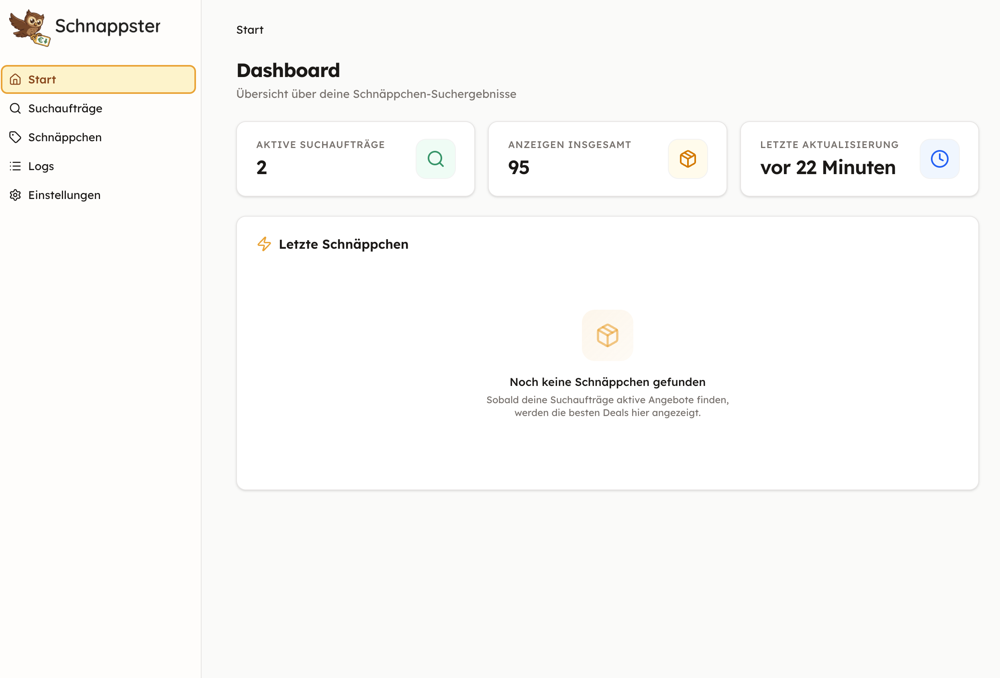
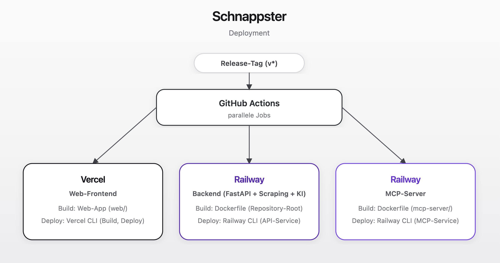
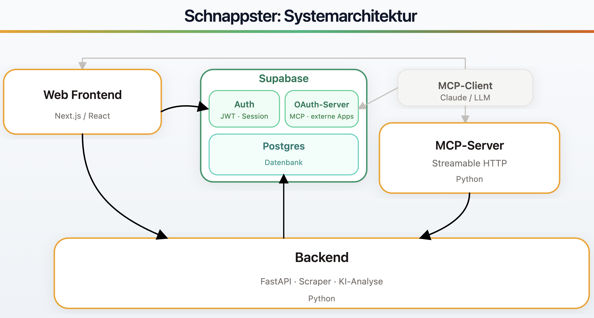

Remote MCP-Server mit Nutzer-Autorisierung
Schnappster als Tool für KI-Assistenten

Ziel
Einen Remote MCP-Server mit Nutzer-Autorisierung bauen.
- Schnappster als Tool für KI-Assistenten bereitstellen
- Nutzer-Autorisierung über OAuth 2
Was dafür nötig war
- Weiterentwicklung zum Mehrbenutzersystem
- Automatisches Deployment (Frontend, API, MCP-Server)
MCP
Model Context Protocol
Offener Standard von Anthropic, über den Sprachmodelle Tools aufrufen und mit externen Systemen interagieren.
Mehrbenutzersystem
Supabase
Managed Datenbank- und Auth-Plattform (Open Source).
PostgreSQL + Row-Level Security
Login per E-Mail oder Google
JWT-Token pro Nutzer
OAuth 2.1 Server
RLS (Row-Level Security)
- PostgreSQL-Policies pro Nutzer
- Durchgesetzt direkt in der Datenbank
Schnappster API
- JWT-Token wird bei jedem Request validiert
- Nutzer-ID fließt in alle Datenbankabfragen ein
Nutzerrollen
- User — eigene Suchaufträge, Schnäppchen & Einstellungen
- Admin — wie User, zusätzlich Systemeinstellungen, Scraper & KI-Analyse
Automatisches Deployment
Ein Befehl deployt alles: uv run release

Systemübersicht

MCP-Server — Tech Stack
Python 3.13
- FastMCP — Streamable HTTP
- httpx — API-Client
- MCP Apps — eingebettete HTML-Oberflächen
Autorisierung
- Supabase OAuth 2.1 Server
- Token-Verifikation per JWT
Betrieb
- Railway — eigener Service, parallel zur API
Entwicklung
- Cloudflare Quick Tunnel — HTTPS
- HTTP-Proxy (mitmproxy)
Der Schnappster MCP-Server
Vermittler zwischen KI-Client und Schnappster-API.
KI-Client
Claude, Cursor, …
MCP-Server
FastMCP (Python)
Schnappster API
FastAPI
list_recent_bargains
show_bargain_detail
list_ad_searches
create_ad_search
update / delete_ad_search
get / update_my_settings
Gleiche Berechtigungen wie im Browser — Bearer-Token wird durchgereicht.
MCP Apps
HTML-Oberflächen direkt im KI-Chat.
Normale Tools liefern Text. MCP Apps liefern zusätzlich eine interaktive HTML-Ansicht, die der Client inline rendert.
Schnäppchen-Detail — Bilder, Score, KI-Begründung
Schnäppchen-Liste — Tabelle, sortiert nach Score
Suchaufträge — Verwaltung aller Suchanfragen
Technik — Jinja2 → HTML+JS als MCP-Ressource
Danke!
Fragen?